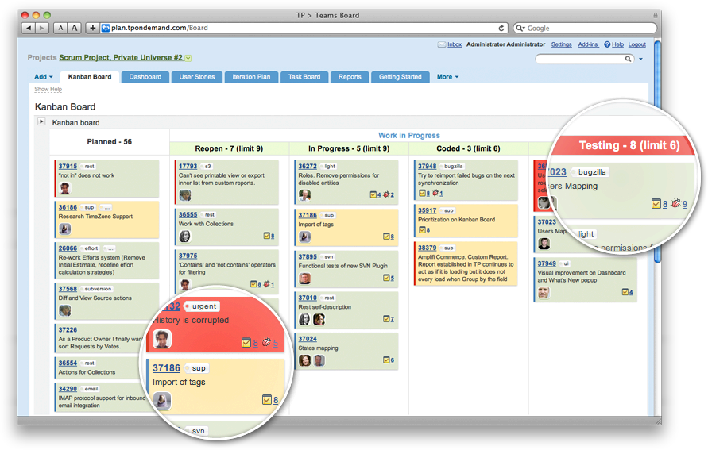

Who Am I?
- I've spent 15 Years working on and building development teams
- I've been blogging about my experiences for 7 years at "Diary of a Scrummaster"
- I'm writing a book called "The Programmers Guide To People"
- I run Cheltenham Geek Nights, we have 250 members
- I've spoken about Agile at conferences in London and Paris
What is Agile?
AgileManifesto.org
Individuals and interactions over processes and tools
Working software over comprehensive documentation
Customer collaboration over contract negotiation
Responding to change over following a plan
In reality?
- Adapting to change
- Happier, more engaged, smarter customers and employees through greater collaboration
- Less waste - Discover whats really needed faster through experimentation
- Shorter cycle times - jobs are completed much faster
- No suprises at the end - Discover problems earlier
Kanban
Foundational Principles
- Start with what you do now
- Agree to pursue evolutionary change
- Initially, respect current roles, responsibilities & job titles
- Encourage acts of leadership at all levels
Core Practices
- Visualise
- Limit WIP
- Manage Flow
- Make Process Policies Explicit
- Implement Feedback Loops
- Improve Collaboratively, Evolve Experimentally
Visualise
See where the problems are and remove them
Focus on flow
- Reducing Work in Progress: Stop starting - Start Finishing
- Create policies that improve the process
Fast Feedback
- Daily Standups
- Working more closely with YOU and the customers to get things done
Scheduling? - Pull don't push
- Prioritised backlog
- Predictable completion times based on effecient flow
- We can manage queues based on due dates